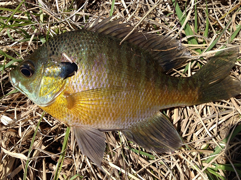
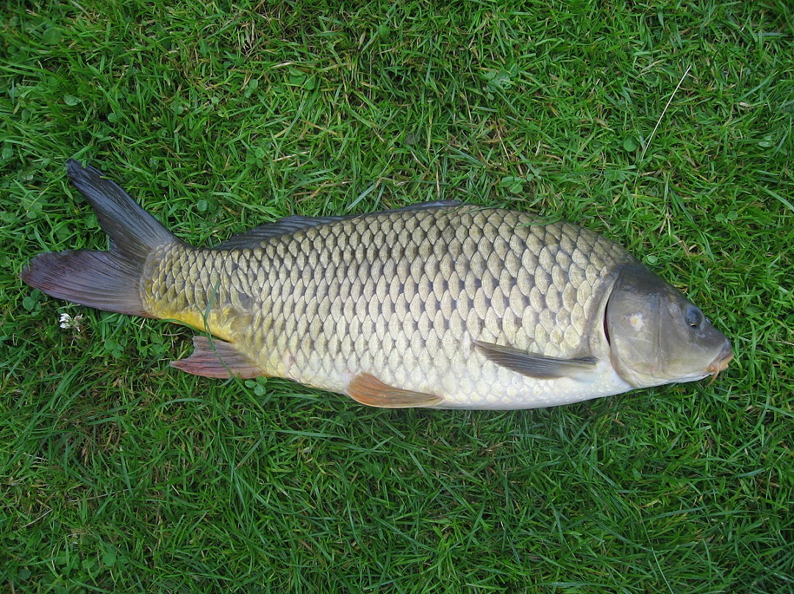

Ribe
Sladkovodne
Ribe so ektotermni vretenčarji, ki so prilagojeni na življenje v vodnem okolju. So najštevilnejša skupina vretenčarjev. Različnih vrst rib je skoraj toliko kot vseh drugih vretenčarjev (dvoživk, plazilcev, ptičev, sesalcev) skupaj. Imajo parne plavuti ter gladko kožo z luskami. Njihovo telo je vretenasto, kar jim omogoča odlično premagovanje vodnega upora. Parne plavuti so prsne in trebušne, neparne pa repna, podrepna in hrbtna (za Salmide je značilna še četrta naparna plavut, to je tolščenka)
Velikoustni bas

Modra škrga

Krap